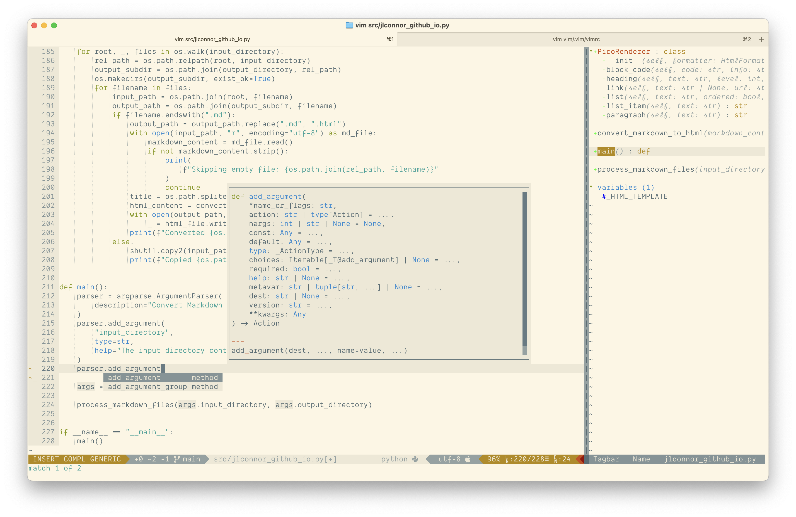
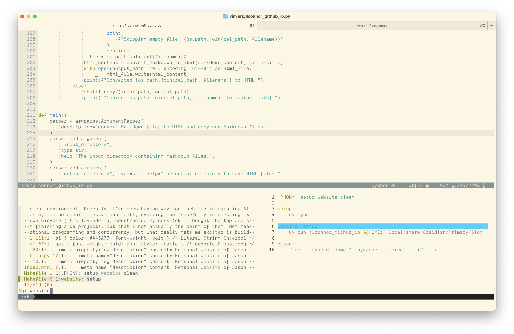
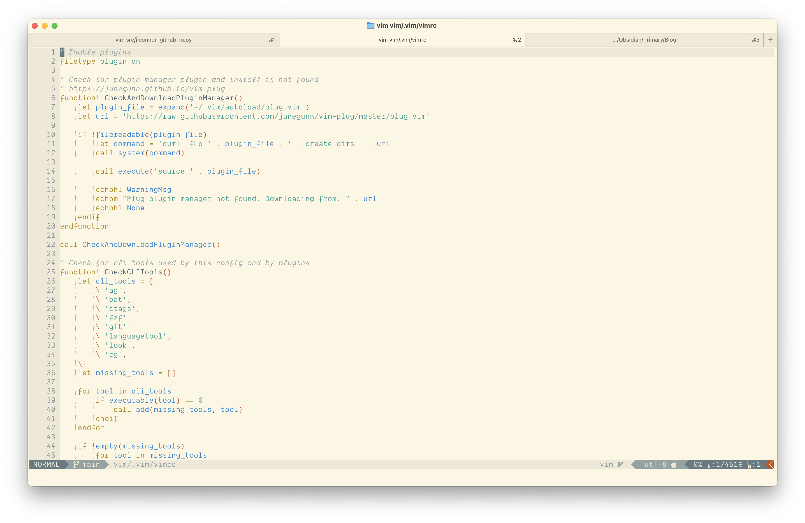
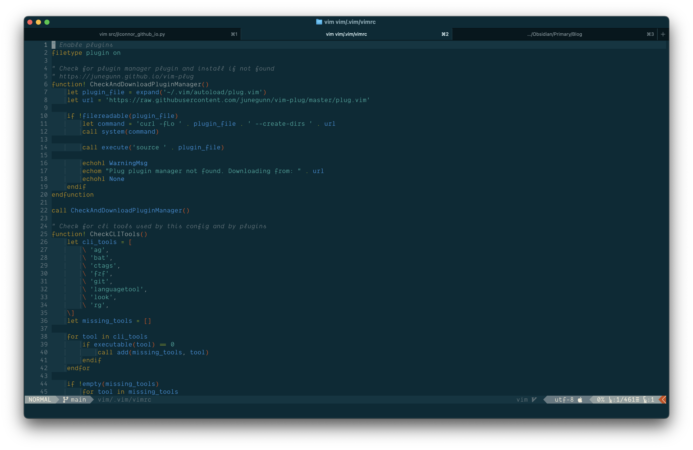

Old-School Vim as an IDE
Overview
I use classic, old-school Vim as my main editor and IDE.
In a world of GUI IDEs and even more "modern" off-shoots of Vim itself, I continue to stick with original Vim for a few very good reasons.
- It's a CLI tool, and I believe in using CLI tools because they promote understanding of the tools themselves.
- It has very powerful integrations with other CLI tools.
- I've used it, well, for my entire career.
- Setup correctly, it possesses all the same capabilities of any other IDE.
Here, I'm going to give a brief overview of the core set of plugins that I use to make an IDE out of VIM, what they do and why I chose them.
Background
I don't want to bore you too much, but an overview of my mindset is probably important enough that I'll share what I was thinking when I created my most recent setup.
- Vim is generally good enough as it is, and I want to leverage as much of the built-in functionality as possible.
- There are several, long-lasting and well-maintained, plugins that augment Vim's built in functionality and I want to use those as much as possible.
- I want to build it around a small, but powerful, set of plugins that will be helpful for general development. Preferably that'll play nicely together.
The functionality I was looking for:
- LSP support
- Code completion
- Code navigation
- Git support
- Fuzzy search
- Attractive and informative
It's generally what most modern IDEs offer. I'm electing not to go into debugging or AI coding assistance here as they're really subjects unto themselves.
The Plugins
Management
First plugin I chose is junegunn's vim-plug plugin manager. It's popular and has a straight-forward interface. It also supports several nice features, like post-install actions and filetype-based lazy loading.
" https://junegunn.github.io/vim-plug
function! CheckAndDownloadPluginManager()
let plugin_file = expand('~/.vim/autoload/plug.vim')
let url = 'https://raw.githubusercontent.com/junegunn/vim-plug/master/plug.vim'
if !filereadable(plugin_file)
let command = 'curl -fLo ' . plugin_file . ' --create-dirs ' . url
call system(command)
call execute('source ' . plugin_file)
echohl WarningMsg
echom "Plug plugin manager not found. Downloading from: " . url
echohl None
endif
endfunction
call CheckAndDownloadPluginManager()
LSP Support
LSPs are great. They are what really give an IDE its superpowers. Code navigation, completion and even outlines. Problem diagnosis and formatting. LSP support is really what turns an editor into an IDE.
For LSP support I went with prabirshrestha's vim-lsp and the complimentary vim-lsp-settings. The former, vim-lsp, has full support for the language server protocol, including some of the experimental features. It's older, but very stable.
" language server plugins
Plug 'https://github.com/prabirshrestha/vim-lsp'
Plug 'https://github.com/mattn/vim-lsp-settings'
The settings plugin has a rather clunky interface for installing and managing language protocol servers, but it does have killer feature: the ability to detect and automatically use any of its supported servers if they are installed in your path.
So instead of installing and maintaining servers with the plugin, I use brew (mostly) or other package managers (rarely, but not never): pipx, npm, go, to install and manage my language protocol servers. Which is much more convenient for me as I'm already using them for all of my other third-party software anyway.
Code Completion
For completions, I used some more of prabirshrestha's plugins, asyncomplete.vim, asyncomplete-lsp.vim and asyncomplete-file.com.
" autocomplete plugins
Plug 'https://github.com/prabirshrestha/asyncomplete.vim'
Plug 'https://github.com/prabirshrestha/asyncomplete-lsp.vim'
Plug 'https://github.com/prabirshrestha/asyncomplete-file.vim'
The first provides an efficient, asynchronous, framework for completions. While the second two tie LSP support and file system support into it respectively. This provides a very complete list of viable completions that come up as I type or use <C-N> | <C-P>.
Code Navigation
I round out code navigation with in-file tag list and navigation with the venerable, but still awesome, tagbar. Anything maintained under the Preserve Vim project on GitHub is old AF. But I actually prefer its unassuming presentation of code tags. And while it's fallback to the ctags command isn't very efficient, with a little Vim magic, we can wire it up to the current LSP and use it to generate tags efficiently.
Plug 'https://github.com/preservim/tagbar'
Relatedly, I opted not to use a third-party plugin for file navigation and instead use the built-in netrw plugin. With a little scripting I have it behaving the way I like, and its esthetic matches tagbar's (or maybe the other way around).

Git Support
For git support, I use a number of classics. Turning to airblade, tpope and junegunn.
" git/github integration plugins
Plug 'https://github.com/airblade/vim-gitgutter'
Plug 'https://github.com/junegunn/gv.vim'
Plug 'https://github.com/tpope/vim-fugitive'
Plug 'https://github.com/tpope/vim-rhubarb'
The most useful to me, is vim-gitgutter. Not only does it populate vim's signcolumn, letting you know at a glance what lines have been added, removed or modified, it also provides a number of handy <leader>-based shortcuts to quickly manage and review changes in your file.
The remaining plugins: gv.vim, vim-fugitive and vim-rhubard I use for digging deeper and sharing links.
Fuzzy Search
For fuzzy search integration I use junegunn's fzf
" search plugins
Plug 'https://github.com/junegunn/fzf', { 'do': { -> fzf#install() } }
Plug 'https://github.com/junegunn/fzf.vim'
I also install the_silver_searcher and ripgrep CLI tools to augment fzf support for searching into files.
Between the two of them, I prefer the_silver_searcher, ag. I don't really have a good reason other than I like it's output format better.

Appearance
I like my personal Vim esthetic, which I can only describe as "old-school-solid". That said, I like it to be attractive, and I like it to be informative at a glance. I should know what file I'm editing, what line I'm on, what function I'm in. If there are any changes in the file or issues.
I'm going to tackle the second part first. I went with vim-airline because it integrates so nicely with all the plugins I've presented so far and displays succinct information that I find useful at a glance. I add vim-airline-themes and vim-devicons to it because they make it look pretty.
I got lucky with my colorscheme: I've used solarized for over a decade now, and I love it. I have a lot less eyestrain with it than with other themes, and I've always liked lighter themes during the day.
It's only been recently that I've started using the OS-level auto-switching from light to dark and this is why I say I got lucky. Vim has always had support for letting the theme react to the background setting. Letting the colors change when it's set to light vs dark.
set background=light " or dark
But very few themes actually take advantage of this feature. And here's the cool part: if you don't explicitly set the background, Vim will try to glean it from the environment (i.e. the terminal emulator), and if you have that setup to auto-switch with your OS, Vim will "do the right thing".
But only if your colorscheme supports it! And the solarized colorscheme (and for that matter, airline solarized theme) supports the automatic change.
" appearance plugins
Plug 'https://github.com/vim-airline/vim-airline'
Plug 'https://github.com/vim-airline/vim-airline-themes'
Plug 'https://github.com/ryanoasis/vim-devicons'
Plug 'https://github.com/lifepillar/vim-solarized8'
 
Honorable Mentions
There are a few remaining plugins that I constantly use that are really just more idiomatic of me and how I like to use Vim and don't really directly fit into the requirements I set forth for myself, but that are fundamental enough that I'll mention them here:
- auto-pairs - auto inserts pairs of quotes, brackets, etc.
- bufexplorer - simple and convenient buffer management
- vim-commentary - convenient keybindings for commenting/uncommenting code
- vim-obsession - actually usable session management
- vim-slash - better behavior for vim's built-in search
Wrap Up
This doesn't really begin to round out the whole picture of my setup. I didn't touch on debugging, for which I use vimspector or AI assistance, for which I use codeium.vim, nor any of the language-specific plugins that I use for developing in Python, Go and SQL. And I haven't even started to think about how to distill my personal vim settings, auto commands, user-defined commands and keybindings.
But what I do have is a potent combination of plugins that create a very effective base for development, that play nicely together, are super stable and together add-up to make my preferred editor, Vim, into my preferred IDE.
I can't thank prabirshrestha, junegunn and tpope whose work provides the majority of the basis of this powerful setup. And all the other plugin authors that have shared their work with the world. I have used your excellent software every single day for years already and will continue for years to come.
And a special thank you to the Preserve Vim project, for all that you do!